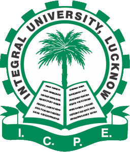

Department of Computer Applications

Welcome to the Department of Computer Application of Integral University.
The Department was established in 2003 and is one of the most reputed academic departments in the field of Computer Application. The curriculum of this department is addressed to the students who wish to be distinguished as Software Developer, Computer System Analyst, Software Engineer, Software Application Architect, Hardware Engineer, Software Consultant, Database Administrator in the private and public sector. You can become part of this highly competitive and futuristic environment by enrolling for one of our exciting programs. The Department offers a 4 semester Bachelor program in Computer Application (BCA), 4 semester Master program in Computer Application, The combination of a dynamic and innovative curriculum that takes advantage of the latest technologies, with the experienced faculties of the Department, creates a fertile ground for the effective dissemination of knowledge and the development of the necessary skills for future professional recognition of the Department's students.
Important Direct Original Links
Visit the original website of Integral University.
More about Integral university-> Click Here to explore the Campus.
Visit the lms of the University.